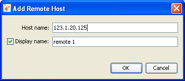
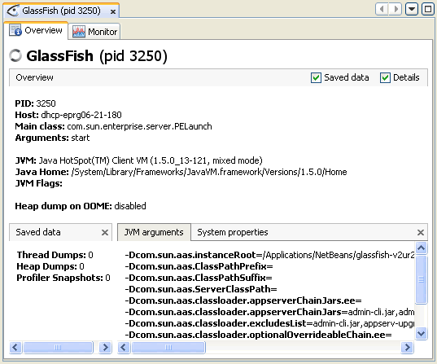

| Documentation Contents |
Working with Remote ApplicationsJava VisualVM is able to access and display data about applications running on remote hosts. After connecting to a remote host, Java VisualVM can display general data about the application's runtime environment and can monitor memory heap and thread activity. Note. Java VisualVM can retrieve monitoring information on remote applications but it cannot profile remote applications. Connecting to a Remote HostConnected remote hosts are displayed as nodes under the Remote node in the Applications window. When you are connected to a remote host, Java VisualVM displays applications running on the host as sub-nodes, and automatically updates the status of the remote applications, removing the applications when they stop and adding applications when they start. To add a remote host, right-click the Remote node in the Applications window, choose Add Remote Host and type the host name or IP address in the Add Remote Host dialog box. (You can also specify a display name that will be used to refer to the host when listed under the Remote node.) Note: To retrieve and display information on applications running on the remote host, the jstatd utility needs to be running on the remote host. To start the jstatd utility, type jstatd on the command line. The jstatd utility is included as part of Java Development Kit (JDK) version 6. For more on jstatd, see the following document: When Java VisualVM is connected to a remote host, a node for the remote host appears under the Remote node in the Applications window. You can expand the remote host node to view the applications running on the remote host. 
Viewing Application DataJava VisualVM displays data about each running remote application in a dedicated tab in the main window. To open the application tab, right-click the application node in the Applications window and choose Open. (Alternatively, you can double-click the application node.) When you click Open, the Overview tab of the application tab opens in the main window. You can use the sub-tabs in the application tab to view details
about the application. |
Copyright © 1993, 2011, Oracle and/or its affiliates. All rights reserved. Please send comments using this Feedback page. |
Java Technology |